<app-page-header [config]="headerConfig">
  <!-- <ion-row class="header-bottom-border ion-padding">
    <h3>
      {{'WELCOME'| translate}} {{ user?.name }}!
    </h3>
    <ion-col class="welcome-note" size="12">{{'WELCOME_NOTE' | translate}}</ion-col>
    <ion-col size="6" class="ion-no-padding"> -->
      <!-- <p class="welcome-note hide-on-small-screen">{{'WELCOME_NOTE'| translate}}!</p> -->
      <div class="d-flex flex-justify-center my-8">
        <ion-searchbar class="search-bar" placeholder="{{'HOME_SEARCH_PLACEHOLDER' | translate}}"
         cdkOverlayOrigin #trigger="cdkOverlayOrigin" (click)="isOpen = !isOpen"
         [(ngModel)]="searchText"
        (keyup.enter)="search(searchText)">
        </ion-searchbar>
      </div>
    <!--</ion-col>
  </ion-row> -->
</app-page-header>
<ng-template
  cdkConnectedOverlay
  [cdkConnectedOverlayOrigin]="trigger"
  [cdkConnectedOverlayOpen]="isOpen"
  (overlayOutsideClick)="isOpen = false"
  [cdkConnectedOverlayOffsetY]="10" 
  [cdkConnectedOverlayWidth]="trigger.elementRef.nativeElement.offsetWidth" 
>
  <ion-grid>
    <div class="overlay-container">
      <ion-row>
        <ion-chip 
          class="chip" 
          *ngFor="let chip of chips; let i = index" 
          (click)="selectChip(chip)"
          [ngClass]="{'selected-chip': criteriaChip === chip}">
          <ion-icon name="close-circle" color="white"></ion-icon>
          <ion-label class="chip-label">{{ chip.label }}</ion-label>
        </ion-chip>
      </ion-row>
    </div>
  </ion-grid>
</ng-template>
<!-- <ion-card *ngIf="showBecomeMentorCard" class="ion-padding card-config">
  <ion-card-header class="ion-no-padding d-flex flex-align-items-center flex-justify-space-between">
    <ion-label class="header-label">{{"CONNECT_SHARE_&_INSPIRE"|translate}}</ion-label>
    <div class="round-icon-button d-flex flex-align-items-center flex-justify-center" (click)="closeCard()">
      <ion-icon class="close-icon" name="close"></ion-icon>
    </div>
  </ion-card-header>

  <ion-card-content class="ion-no-padding">
    <div class="d-flex flex-justify-center">
      
    </div>
    <ion-label class="header-label content-label">{{"EMPOWER_THE_SCHOOL_LEADERS"|translate}}</ion-label>
  </ion-card-content>
  <ion-button class="mentor-card-button my-8" (click)="becomeMentor()">{{"BECOME_A_MENTOR"|translate}}</ion-button>
</ion-card> -->
<div class="page-intro segment-wrapper" [ngClass]="{'align-center': !isNativeApp}">
  <div class="d-flex segment-wrapper">
    <div class="segment-div" *ngFor="let segment of segmentButtons;">
      <ion-button
        *ngIf="!mentorSegmentButton.includes(segment.name) || (mentorSegmentButton.includes(segment.name)&&isMentor)"
        [ngClass]="{'font-bold': (selectedSegment==segment?.name) , 'segment-button': (selectedSegment!=segment?.name)}"
        fill="outline" (click)="segmentChanged(segment)">{{segment?.label|translate}}</ion-button>
    </div>
  </div>
</div>
<ion-content>
  <div *ngIf="sessions&&(selectedSegment=='all-sessions')">
    <ion-grid>
      <ion-row class="d-flex ">
        <ion-col *ngFor="let session of sessions?.all_sessions" padding size-xs="12" size-sm="12" size-md="6" size-lg="6"
          align-self-stretch>
          <div class="my-10" >
            <app-session-card [data]="session" (onClickEvent)="eventAction($event)">
            </app-session-card>
          </div>
        </ion-col>
      </ion-row>
    </ion-grid>
  </div>
  <div *ngIf="(selectedSegment=='created-sessions')&& isMentor">  
    <ion-card *ngIf="createdSessions?.data?.length" class="session-sqr-card">
      <ion-card-content class="card-content">
        <div class="segment-button d-flex flex-justify-center flex-align-items-flex-end">
          {{"START_CREATE_SESSION"|translate}}
        </div>
        <ion-grid>
          <ion-row class="d-flex flex-justify-center">
            <ion-col padding size-xs="12" size-sm="12" size-md="8" size-lg="6" align-self-stretch>
        <ion-button shape="round" strong="true" class="card-button" (click)="createSession()">
          {{'CREATE_SESSION' | translate}} <ion-icon class="create-icon" name="add-circle-outline"></ion-icon>
        </ion-button>
      </ion-col>
    </ion-row>
  </ion-grid>
      </ion-card-content>
    </ion-card>
    <div *ngIf="createdSessions?.data?.length">
      <ion-label class="font-bold section-header">{{"MY_MENTORING_SESSIONS"|translate}}</ion-label>
      <ion-grid>
        <ion-row class="d-flex ">
          <ion-col *ngFor="let session of createdSessions?.data" padding size-xs="12" size-sm="12" size-md="6" size-lg="6"
            align-self-stretch>
            <div >
              <app-session-card [data]="session" (onClickEvent)="eventAction($event)">
              </app-session-card>
            </div>
          </ion-col>
        </ion-row>
      </ion-grid>
      
    </div>
    <div *ngIf="!createdSessions?.data?.length">
      <app-no-data-found [messageHeader]="'NO_SESSIONS_CREATED'" [messageDescription]="'START_CREATING_SESSION'">
      </app-no-data-found>
      <div class="d-flex flex-justify-center">
        <ion-button shape="round" strong="true" class="card-button" (click)="createSession()">
          {{'CREATE_SESSION' | translate}} <ion-icon class="create-icon" name="add-circle-outline"></ion-icon>
        </ion-button>
      </div>
    </div>
  </div>
  <div *ngIf="sessions&&(selectedSegment=='my-sessions')">
    <div *ngIf="sessions && sessions?.my_sessions?.length">
      <ion-label class="font-bold section-header">{{"ENROLLED_SESSIONS"|translate}}</ion-label>
      <ion-grid>
        <ion-row class="d-flex ">
          <ion-col *ngFor="let session of sessions?.my_sessions" padding size-xs="12" size-sm="12" size-md="6" size-lg="6"
            align-self-stretch>
            <div class="my-10" >
              <app-session-card [data]="session" (onClickEvent)="eventAction($event)" [isEnrolled]="true">
              </app-session-card>
            </div>
          </ion-col>
        </ion-row>
      </ion-grid>
     
    </div>
    <div *ngIf="sessions && !sessions?.my_sessions.length">
      <app-no-data-found [messageHeader]="'NO_SESSIONS_ENROLLED'" [messageDescription]="'CHECK_ALLSESSION_TO_ENROLL'">
      </app-no-data-found>
    </div>
  </div>
  <div *ngIf="!sessions">
    <app-skeleton [type]="SKELETON.HOME_SKELETON" [repetition]="4"></app-skeleton>
  </div>
</ion-content>